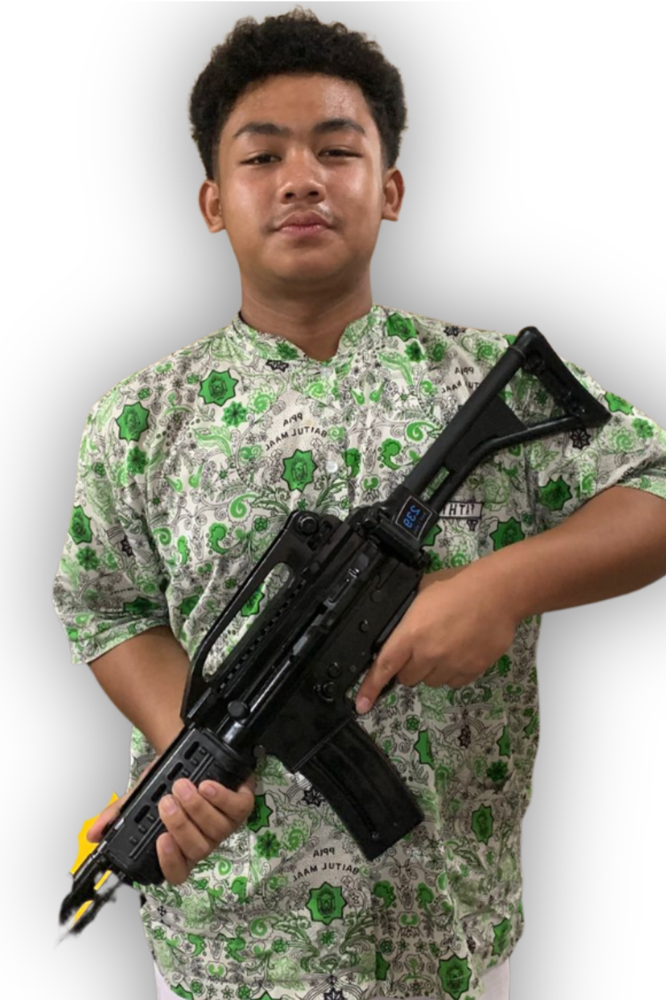
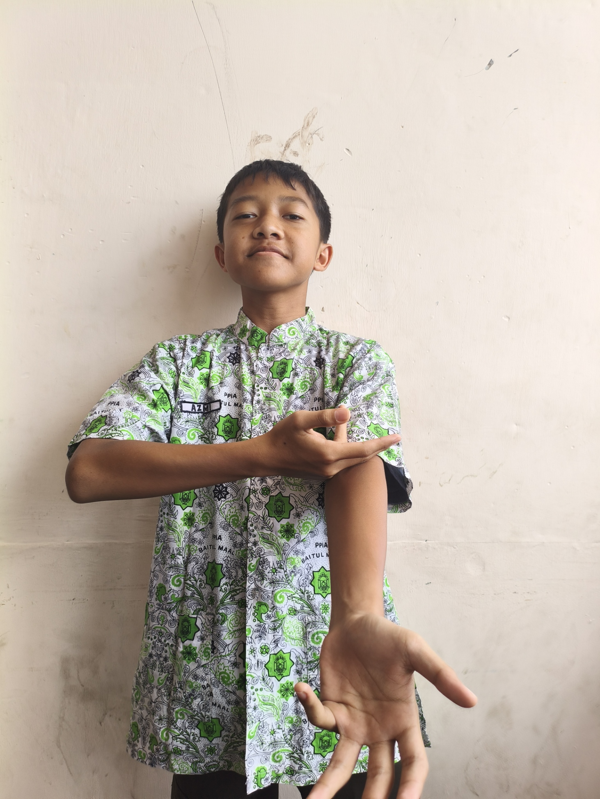
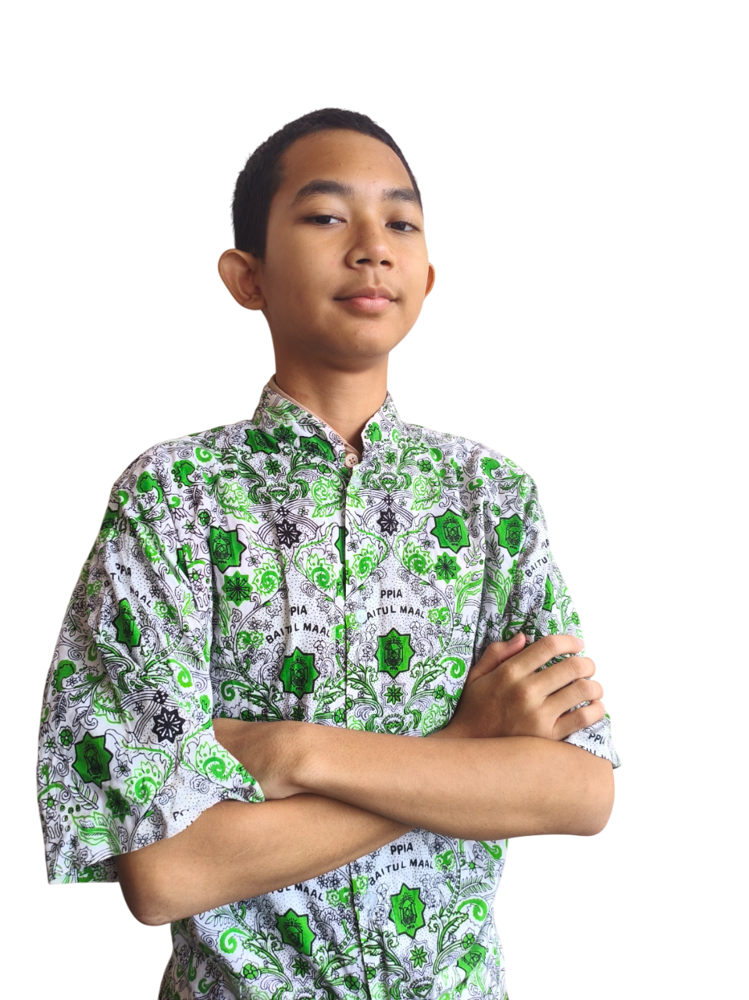
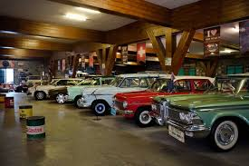
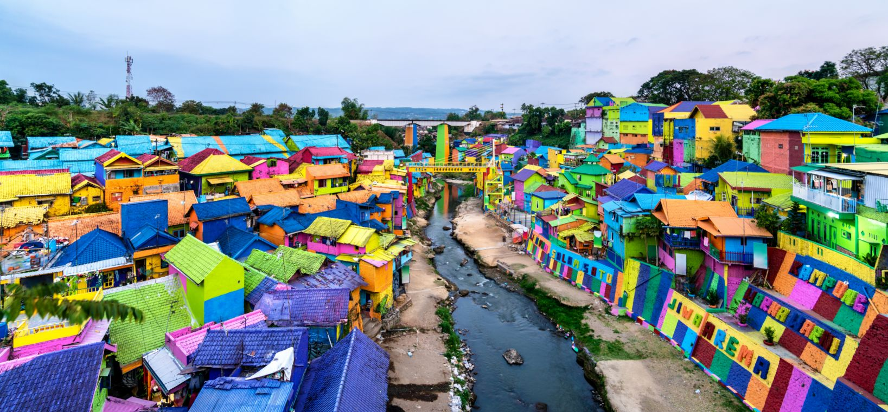
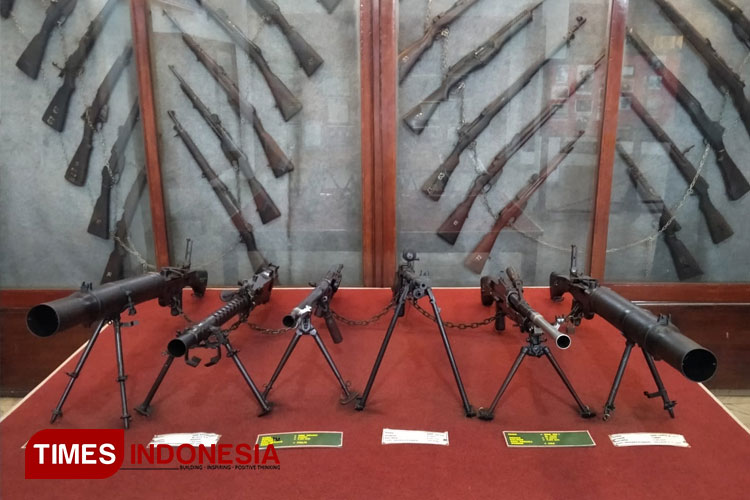
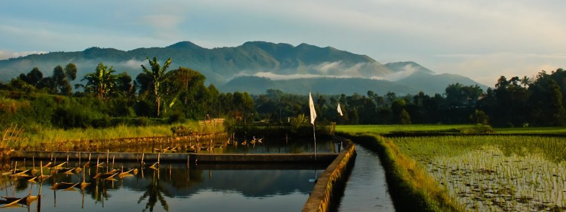

EKspedisi RT 4
Menjelajah, Mengabdi, Menginspirasi
Selamat datang di website resmi Ekspedisi RT 4...
Rencana Kegiatan Ekspedisi
Klik pada setiap tanggal di linimasa di bawah untuk melihat detail aktivitasnya.
🚂 10 November
Hari Keberangkatan
Pelepasan & Keberangkatan
- Pelepasan Ekspedisi dan keberangkatan dari Stasiun Senen menuju Malang Kota.
🎨 11 November
Tiba di Malang
Eksplorasi & Pembukaan
- Tiba di Stasiun Malang.
- Eksplorasi Kampung Warna Warni & Tridi.
- ...
🌟 12 November
Hari Pengabdian
Penyuluhan & Interaksi
- Penyuluhan "7+1 Kebiasaan Anak Indonesia Hebat".
- Observasi & sharing profesi community.
- ...
🍎 13 November
Penutupan & Kepulangan
Eksplorasi & Perjalanan Pulang
- Closing.
- Eksplorasi Perkebunan Apel.
- ...
🏠 14 November
Tiba di Rumah
Tiba di Tangerang Selatan
- Tiba di SMP Islam Plus Baitul Maal...
Profil Anggota RT 4
Klik kartu untuk melihat detail anggota
PEMBINA

Ahmad Luthfi Firdaus S.Pd
KETUA

Ridza Kholdun
WAKIL KETUA
M Rayhan Arrasyid S
SEKRETARIS
Fadlan Ali Ibadurrahman

Fattih Daris Alvino

Nadhif Zaidan Fayyadh

M Fathi Sabilul M

Muhammad Hamzah Azmi

Muhammad Hisyam An’nafi

Banu Mibras Naufal
Wawasan & Sejarah Lokasi Kunjungan
Memahami latar belakang tempat yang kami kunjungi...

Museum Angkut
Museum Angkut merupakan museum transportasi...

Kampung Wisata Jodipan (Kampung Warna-Warni)
Dulunya adalah kawasan pemukiman kumuh...

Museum Brawijaya
Museum sejarah militer yang terletak di Jalan Ijen...

Desa Pujon Lor
Terletak di Kecamatan Pujon, Kabupaten Malang...